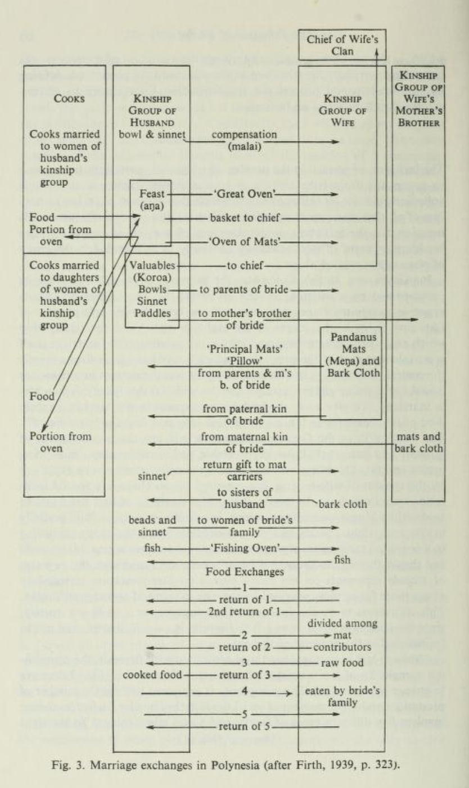

Gifts, Boundaries, and Taboos
The Gift
Marcel Mauss wrote Essai sur le don (Essay on the Gift) as the main work of L’Année Sociologique of 1923/24. This brief, comparative work is his best known contribution to anthropology and one of the most widely cited anthropological works. As editor of the journal, co-author of multiple works, and as chair of Sociology at the College de France, was key to the growth of social anthropology in France. (And is even credited by Claude Lévi-Strauss with importing the term social anthropology into France.1)
1 Claude Levi-Strauss, “The Scope of Anthropology,” Current Anthropology 7, no. 2 (1966): 112–23, http://www.jstor.org/stable/2740021.
Mauss’s essay reoriented the anthropological study of the circulation of goods, intangible offerings, services, and honors in multiple ways. It widened the scope of “stuff” considered possible to exchange, sets up social collectivities (and also deities) rather than individuals as the participants in these exchanges, recognizes that that which is exchanged is charged with spiritual power, explains that this system morally demands reciprocity, and argues that such reciprocity is the foundation of social relations.
All these institutions reveal the same kind of social and! psychological pattern. Food, women, children, possessions, charms, land, labour, services, religious offices, rank—every- thing is stuff to be given away and repaid. In perpetual interchange of what we may call spiritual matter, comprising men and things, these elements pass and repass between clans ^and individuals, ranks, sexes and generations.2
2 Marcel Mauss, The Gift; Forms and Functions of Exchange in Archaic Societies., trans. Ian Cunnison and E. E. Evans-Pritchard (Free Press, 1954), 11–12.
The essay appears within a journal (L’Année Sociologique) that Mauss was resurrecting following World War I and the death of both his uncle and mentor Émile Durkheim and many of his scholarly peers. The entire issue is included in the 2016 translation by Jane Guyer, published by the anthropological collective Hau, which in turn owes its name to the Polynesian concept as explored in the essay.
Specifically Māori culture occupies a turning point in the essay, one partly grounded on misinterpretation between anthropologist Elsdon Best and Māori informant and scholarl Tamati Ranapati. Georgina Stewart has critically examined the relationship and the multiple points of cultural communication, miscommunication, and supposition that culminate in “the hau of the gift” as conceptualized by Mauss.
Ranapiri was inventing Māori academic writing as he wrote: writing about and in language that hitherto had existed only in oral registers. Other than Ranapiri, only one other scholar of Māori ethnicity, namely Biggs, appears in the history of debate about the hau of the gift.
Mauss failed to account for the personified Māori cosmos, and ended up invalidly personifying ‘hau’ instead, in his delineation of ‘hau taonga’ as the ‘hau of the gift’—the ‘spirit’ of the object given. In this way, Mauss distorted the Māori concept of hau to serve his preconceived search for universal social truth, and a general theory of exchange.3
3 Georgina Stewart, “The ‘Hau’of Research: Mauss Meets Kaupapa Māori,” Journal of World Philosophies 2, no. 1 (2017), https://scholarworks.iu.edu/iupjournals/index.php/jwp/article/view/917.
Amber Nicholson likewise explores the Māori concept of hau in depth using numerous Māori sources.4 In my view, this rich exposition breaks with some anthropological elaborations on the term (which Nicholson maps out in a dramatic side-by-side table with Māori ideas), but still resonates with the concepts of spiritual force, reciprocity, and enmeshment in larger entities emphasized by Mauss.
4 Amber Nicholson, “Hau: Giving Voices to the Ancestors,” The Journal of the Polynesian Society 128, no. 2 (2019): 137–62, https://www.jstor.org/stable/26857338.
There have been three English translations of The Gift:
A 1954 translation by Ian Cunnison, introduced by E. E. Evans-Pritchard.5
A 1990 translation by W. D. Halls, introduced by Mary Douglas.6
A 2016 translation by Jane I. Guyer, introduced by Guyer and Bill Maurer.7
5 Mauss, The Gift; Forms and Functions of Exchange in Archaic Societies.
6 Marcel Mauss, The gift: the form and reason for exchange in archaic societies, Routledge classics (Routledge, 2002).
7 Marcel Mauss, The gift: Expanded edition, Expanded edition. (HAU Books, 2016).
The Gift is written in the tradition of an open-ended essay, and draws many threads across a remarkable sweep of time and geography. This comment from Claude Lévi-Strauss emphasizes the creative and connective, rather than scientific and deductive aspect of such writing:
Without a doubt, the proof will remain largely illusory: we will never know if the other, with whom we cannot, after all, identify, makes from the elements of his social existence a synthesis exactly superposable on that which we have worked out. But it is not necessary to go so far; all that is needed-and for this, inner feeling is sufficient-is that the synthesis, how- ever approximate, arises from human experience. We must be sure of this, since we study men; and as we are ourselves men, we have that possibility. The way in which Mauss (1950:285) poses and resolves the problem in the Essay on the Gift brings to view, in the intersection of two subjectivities, the nearest order of truth to which the sciences of man can aspire when they confront the wholeness of their object.8
8 Levi-Strauss, “The Scope of Anthropology,” 114.
With that said, The Gift attacks and perhaps overthrows many prior certainties in anthropological studies of the economy, not least of which is the refutation of the existence of a “free gift,” as highlighted in Mary Douglas’s introduction. Think about which ones you find.
On Boundaries: Purity and Danger
Mary Douglas’s Purity and Danger: An Analysis of Concepts of Pollution and Taboo9 stands as a historical landmark in the anthropology of religion.
9 Mary Douglas, Purity and Danger: An analysis of concept of pollution and taboo, 1st ed. (Routledge, 1966), https://doi.org/10.4324/9780203361832.
A signature phrase in it is “matter out of place,” Douglas’ definition of the otherwise form-shifting concept of dirt. She sets up categorization and boundary drawing as a core element of religion. Given this, one need not think of the Kosher laws in Leviticus as primitive hygenic codes, nor of magical incantations as ways of causing miracles. Rather, she argues, both express ritual concern with maintaining social order.
10 Mary Douglas, Purity and Danger: An Analysis of Concept of Pollution and Taboo (Routledge, 2003), http://www.dawsonera.com/depp/reader/protected/external/AbstractView/S9780203361832.
It is only by exaggerating the difference between within and without,
above and below,
male and female,
with and against,
that a semblance of order is created.
Her chapter on magic and religion confronts and challenges the line of anthropological scholarship on “primitive religion” going back to James Frazer’s The Golden Bough.
Structures of Kinship

11 Claude Lévi-Strauss, The Elementary Structures of Kinship, Rev. ed. (Beacon Press, 1969).
In Elementary Structures of Kinship,11 Claude Lévi-Strauss proposes a structuralist explanation for the circulation of spouses mentioned in Mauss’s The Gift. The core insight of the book is to unite the near-universal taboo on incest (in some form) with the complex kinship structures that anthropologists had been mapping since at least Lewis Henry Morgan. (Like Douglas, he rejects the functionalist explanation that incest taboos prevent interbreeding.)
Lévi-Strauss argues that by separating marriageable from un-marriageable individuals, kinship systems generate the necessary boundaries for lineages that are the collective social actors which exchange spouses—glossed in his account, as in Mauss’s brief phrase, exclusively as women.
Gayle Rubin will build upon Elementary Structures of Kinship in her pivotal essay “The Traffic in Women,”12 which theorizes kinship and gender systems as integrated whole, subject to historical change, and as systems of power.
12 Gayle Rubin, The Traffic in Women: Towards a Political Economy of Sex, ed. Rayna Reiterc (Monthly Review Press, 1975).
And if men have been sexual subjects—exchangers—and women sexual semi-objects—gifts—for much of human history, then a great many customs, clichés, and personality traits seem to make a great deal of sense (among others, the curious custom by which a father gives away a bride).
This essay proves foundational to Gender Studies. Both Rubin and Judith Butler will bring vast inquiries into gender, the body, and sexuality into dialogue with Lévi-Strauss’ account.
Permalink: https://carwilb.github.io/teaching/history-anthro-w12.html